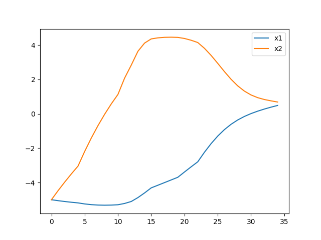

Bu bölümde optimal kontrol problemlerini sayısal çözmenin yöntemlerini göreceğiz.
Rayleigh Problemi
Bir elektrik devresi düşünelim, bu devre düz voltajı salınıma çevirebiliyor,

Devreyi sol taraftan verilen $U_0(t)$ ile kontrol etmek mümkün [1, sf. 189], [2, sf. 413]. Devreninin denklemi
$$ \ddot{x} = -x(t) + \dot{x}(t) ( 2.0 - p \dot{x}(t)^2 ) + u(t) $$
ki biz $p = 0.1$ seçeceğiz. ODE sistemi çıkartmak için $x_1 = x$, $x_2 = \dot{x}$ dersek,
$$ \dot{x_2} = -x_1 + (2.0 - 0.1 x_2^2)x_2 + 4 u(t) $$
Acaba $x_1(t=0)=-5$ ve $x_2(t=0)=-5$ başlangıç şartları için, $t_f=2.5$ anına kadar kontrolü ve salınımı az seviyede tutmaya çalışsak nasıl bir kontrol uygulamamız gerekir?
Hamiltonian'i tanimlarken
$$ \mathcal{H} = V + \lambda^T f $$
formülü verilmişti. Üstteki tanımda ODE denklem sistemi $f$,
$$ V = x_1^2 + u^2 $$
Şimdi $\mathcal{H}$'yi sembolik olarak bulalım,
import sympy
u, x1, x2, lam1, lam2 = sympy.symbols('u x1 x2 lam1 lam2')
x = sympy.Matrix([[x1],[x2]])
lam = sympy.Matrix([[lam1],[lam2]])
f = sympy.Matrix([[x[1]],[ -x[0]+(2.0 - 0.1*x[1]**2)*x[1] + 4*u ]])
V = x[0]**2 + u**2
H = V + lam.T.dot(f)
print (H)
lam1*x2 + lam2*(4*u - x1 + x2*(2.0 - 0.1*x2**2)) + u**2 + x1**2
[devam edecek]
Kaynaklar
[1] Bittner, Variational calculus, optimal control and applications
[2] Wilson, Advanced Control using MATLAB